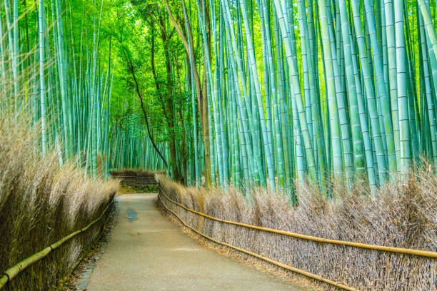

- 


Map
Mount Everest is Earth's highest mountain above sea level, located in the Mahalangur Himal sub-range of the Himalayas.
Pashupatinath Temple is a Hindu temple dedicated to Lord Pashupati, and is located in Kathmandu, Nepal near the Bagmati River. This is currently the largest temple in the world as well as one of the Oldest Temple.
Lumbinī is a Buddhist pilgrimage site in the Rupandehi District of Lumbini Province in Nepal. It is the place where, according to Buddhist tradition, queen Maya gave birth to Siddhartha Gautama at around 566 BCE.